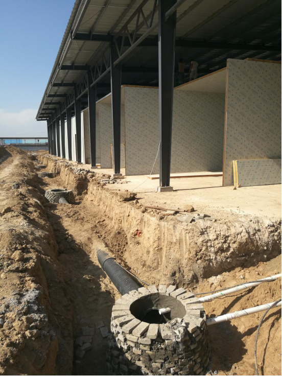

北京河北同蓝天，共呼吸！天更蓝，水更清，场更洁！【匠人精神 表里如一】

2017年8月16日起，保定市以优化能源结构为重点，全面实施大气污染防治攻坚行动。在保定各界政府推动治理下，在全市人民努力下，攻坚行动取得明显效果，我市天更蓝、地更绿、水更清、环境更优美。
保定联农果品批发市场建设也接近了尾声。 蓝蓝的天空，洁白的云朵，为整洁的市场增添了色彩，场区变得更加美丽。
整洁的场区背后是所有现场管理人员的辛勤劳动，他们用汗水与辛劳给市场一个整洁的容貌。
地下强大的配套排水管网系统保障市场的排水功能，感谢工人们的辛勤。

由于将整个场区加高90公分，加上完善的地下排水管网，有效的防止了雨季雨水倒灌，投入使用之后，遇到恶劣天气将会最大程度的保障商户货品安全。
“表里如一”说的就是它---保定联农果品批发市场，完善的场区配套设施，强大的地下排水管网系统，便捷的交通交易环境，新鲜丰富的产地直供果品，实惠的价格，即将成为您采购的首选大市场！